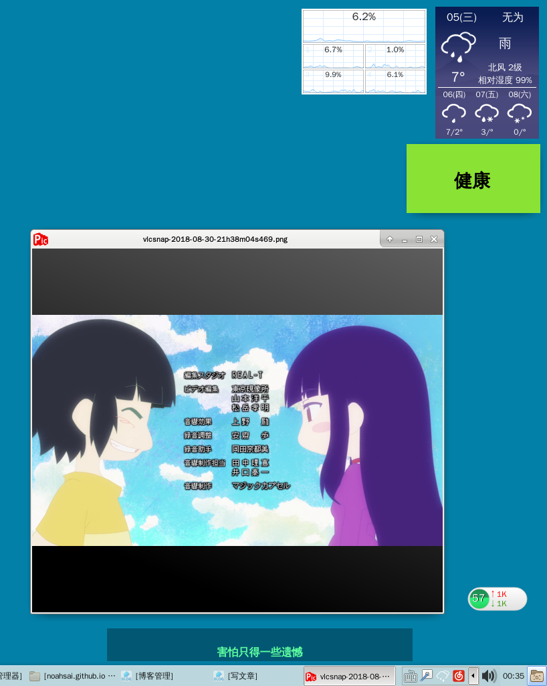
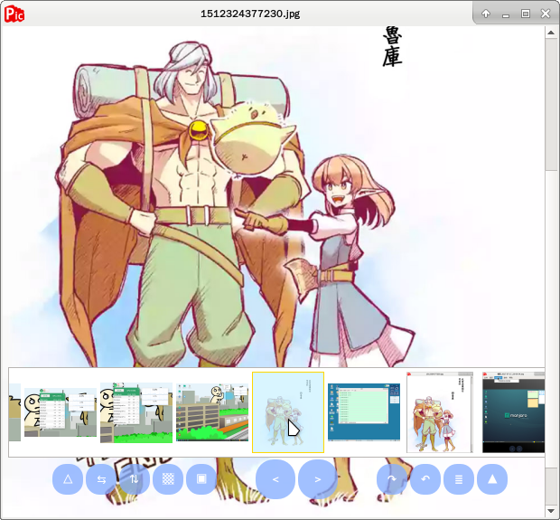

Pic看图 18.12.06_00:36:44
2018.12.06
 
简陋的看图软件，只能用来看图，图片有问题时会闪退的BUG未修。 这个软件诞生于n年前，为服务前代Wei漫画而诞生，专门用来方便看漫画的，放至wei漫画目录下可直接调用该软件看下载完的漫画。 功能： 只能看图，能旋转，能全屏，能简陋地缩放，能设置到底自动切换下一张，能手动翻页，下滚动鼠标自动隐藏菜单栏。 注意：如果图片大到需要用滚动条查看的，到底后需要滚动4下才能自动切换。
项目地址：https://github.com/noahsai/picture
|